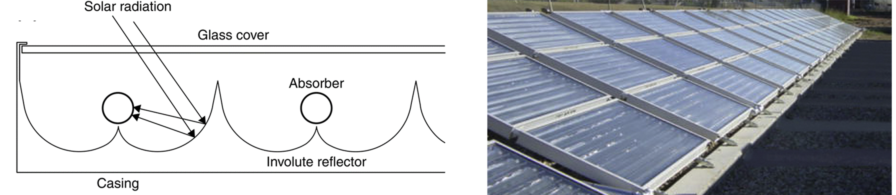
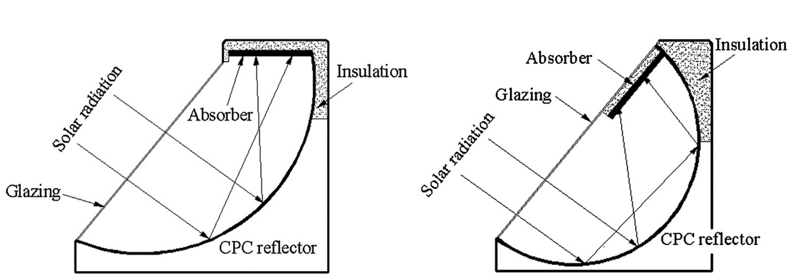
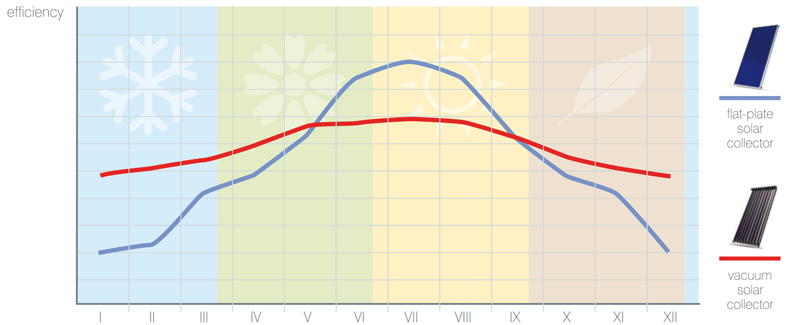
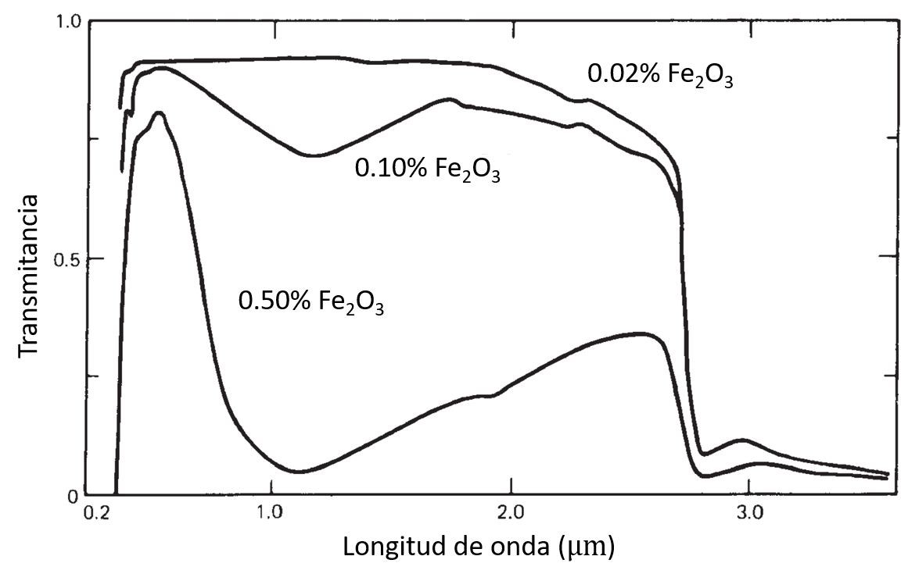
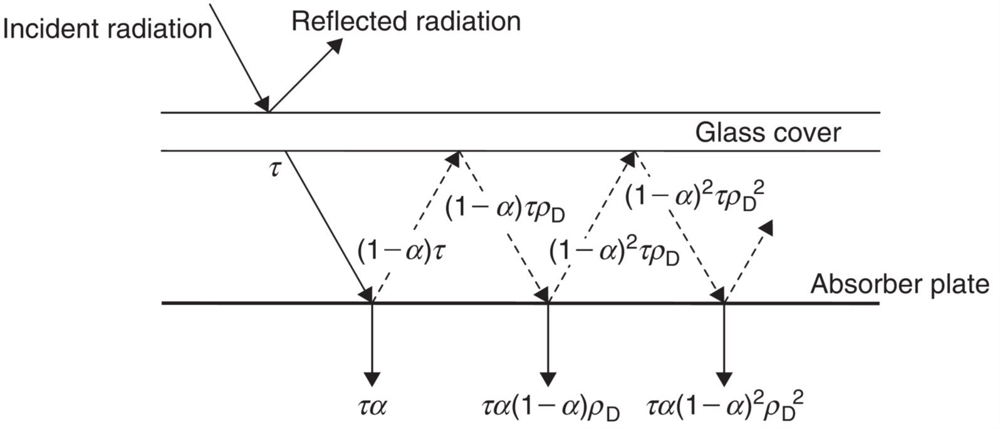
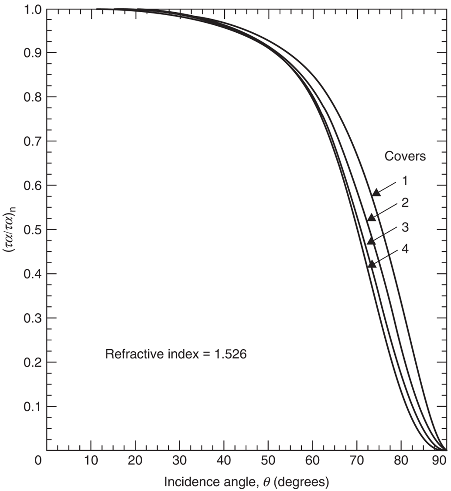
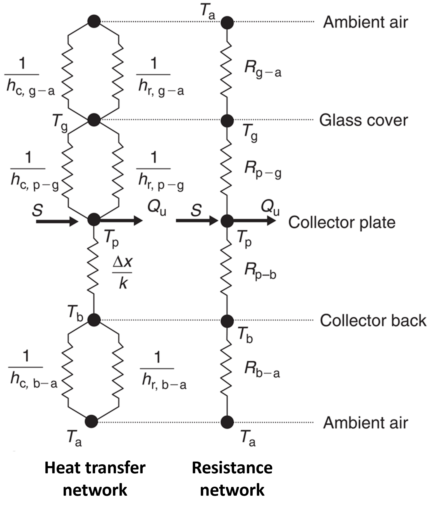
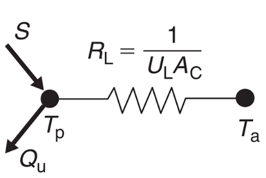
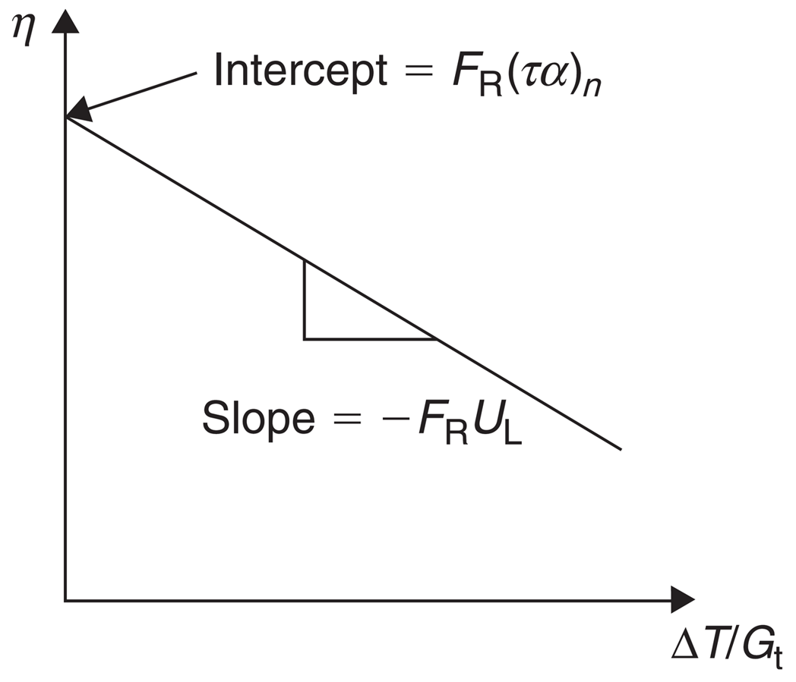
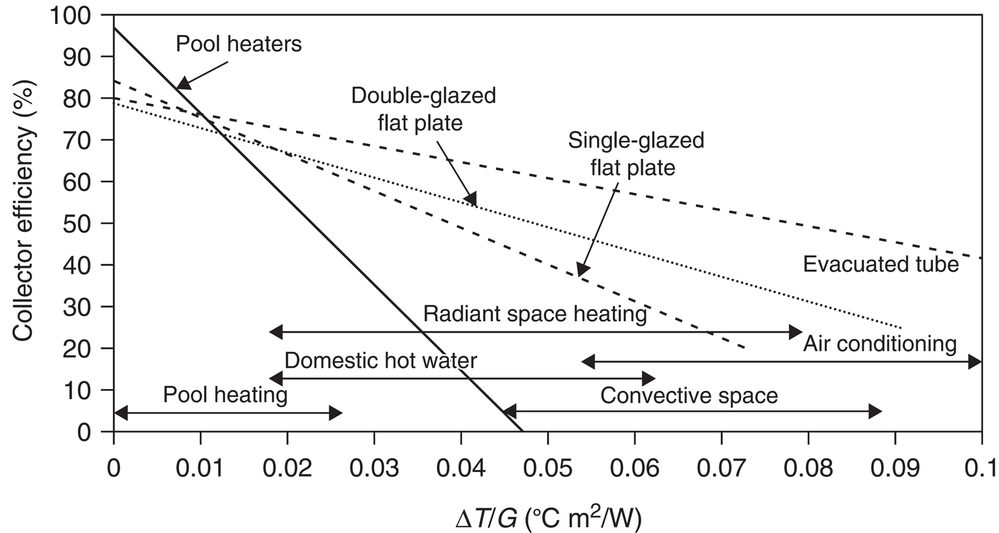

Colectores solares estacionarios
Contents
MEC501 - Manejo y Conversión de Energía Solar Térmica
8. Colectores solares estacionarios#
Profesor: Francisco Ramírez Cuevas
Fecha: 21 de octubre 2022
8.1. Introducción#
Los colectores solares son un tipo especial de intercambiador de calor que absorbe la radiación solar, la convierte en calor y la transfiere a un fluido (usualmente agua, aire, o aceite). que fluye a través del colector.
Podemos clasificar a los colectores solares en dos tipos:
Colectores estacionarios. Corresponde a colectores de eje fijo.
Colectores con concentración solar. Se caracterizan por poseer superficies convacavas para interceptar la luz solar y concentrarla en un área de absorción de menor tamaño. Estos colectores son equipados con un sistema de rastreo solar (eje móvil), para maximizar la captura de radiación solar.
Los colectores sin concentración son generalmente utilizados en aplicaciones que requieren calentar un fluido a temperaturas menores al punto de ebullición, ya sea para consumo domiciliario o calefacción. Los colectores con concentración, en cambio, permiten conseguir altas temperaturas, y se utilizan en plantas de generación de energía a través de un ciclo térmico.
En la siguiente tabla, presentamos una lista de los colectores solares más comúnes clasificados por el tipo de movimiento del eje. Esto es:
Estacionario
Rastreo solar por un eje (un grado de libertad)
Rastreo solar por dos ejes (dos grados de libertad)
{kind=link}
En esta unidad revisaremos los aspectos generales de los colectores estacionarios.
Los más comunes son:
Colector solar de placa plana (Flat-plate collector o FPC)
Colector parabólico compuesto (Compound parabolic collector o CPC)
Colector de tubo evacuado (Evacuated tube collector o ETC)
8.1.1. Colectores de placa plana (FPC)#

Los colectores de placa plana se componen de un absorbedor (absorbing blackplate) para capturar la radiación solar. La energía absorbida es transferida a un fluido que circula por pequeños tubos ascendentes (riser pipes) en contacto directo con el absorbedor. Las entradas y salidas del fluido son capturadas por tubos de cabecera (header pipes) en la parte inferior y superior, respectivamente. Las partes laterales e inferior del colector están recubiertas con aislante térmico para reducir las pérdidas de calor. En la parte superior se utiliza una cubierta transparente (glazing sheet) para reducir las pérdidas por convección y radiación.
Los FPC son los colectores más comunes en el mercado debido a su bajo costo. Permiten capturar las componentes especular y difusa de la radiación solar, y logran temperaturas de operación entre 30 y 80° C
8.1.2. Colector parabólico compuesto (CPC)#
{kind=link}
El Colector Parabólico Compuesto (CPC) está constituido de 2 superficies parabólicas que reflejan los rayos solares hacia una superficie absorvedora. Los CPC permiten una tolerancia de ángulos de incidencia relativamente amplia. Aunque la concentración de luz es mayor que los colectores de placa plana, el rango de ángulos de incidencia es menor adimisibles es menor.
El absorbedor puede estar dispuesto en distintas configuraciones, tales como: plano, bifacial, en forma me cuña o cilíndrico.

El absorbedor también puede estar dispuesto de forma asimétrica, ocupando un punto superior en la geometría del colector. 
{kind=link}
8.1.3. Colector de tubo evacuado (ETC)#
Los colectores de tubo evacuados, consisten en una serie de tubos trasparentes sellados al vacío, cada uno con un absorbedor de radiación conectado a un tubo central que transporta el fluido. El vacío actúa como asilante térmico frente a las pérdidas de calor por convección y conducción, permitiendo operar a mayores temperaturas que los FPC. Cada tubo evacuado contiene un fluido con cambio de fase líquido-vapor. En la parte superior, se ubica un condensador, a través del cual se produce la transferencia de calor hacia el fluido a calentar.

Al igual que los FPC los ETC permiten capturar la componente especular y difusa de la radiación solar. Sin embargo, la eficiencia de los ETC es mayor en ángulos de incidencia bajos. Así, los ETC son preferibles en climas caracterizados por alta nuvosidad y viento
{kind=link}
8.2. Componentes de un colector de placa plana#
8.2.1. Cubierta de transparente#
La cubierta transparente generalmente está compuesta de vídrio (sílice) con bajo contenido de óxido de hierro (Fe\(_2\)O\(_3\)). El vídrio común utilizado en ventanas tiene altos niveles de Fe\(_2\)O\(_3\) que reducen la tranparencia en el infrarojo medio y parte del visible.
{kind=link}
Esta cubierta se ubica cerca del absorbedor para generar una pequeña capa de aire estancado, el cual actúa como aislante térmico ante la convección de calor del exterior.
Por otro lado, materiales como el sílice, poseen alta emisividad en el infrarojo medio (mid-IR). Al igual que con el efecto invernadero, esta propiedad permite capturar la radiación emitida por el absorbedor caliente, minimizando las pérdidas de calor por radiación.
8.2.2. Placa absorbedora#
El absorbedor debe cumplir con dos requerimientos. Por un lado, debe absorber la mayor cantidad de radiación solar posible (\(\alpha \approx 1\) en el espectro visible e infrarojo medio). Por el otro, debe minimizar las pérdidas de calor por radiación (\(\varepsilon \approx 0\) en el espectro infrarojo medio)
En otras palabras, el absorbedor debe operar como un absorbedor selectivo, con una absorptancia variable en el espectro.

Comúnmente, estas superficies están compuestas de una pequeña capa superior con alta absorptancia en el espectro visible y near-IR, pero relativamente transparente en el espetro mid-IR, depositada sobre un substrato metálico con alta reflectancia en el espectro visible y mid-IR.
Un ejemplo es el absorbedor compuesto por cromo negro depositado sobre una superficie de niquel.
8.2.3. Integración de componentes#
Los tubos asecendentes deben estar integrados en el absorbedor, o bien, unidos mediante soldaduras o sujetadores. En último caso es importante que la unión minimice la resistencia térmica en el contacto entre los tubos y el absorbedor.
8.3. Análisis térmico de colectores de placa plana#
8.3.1. Absorción de radiación solar#
Utilizando el modelo de cielo isotrópico, la radiación solar absorbida por un colector, \(s\), puede aproximarse por:
Donde:
\(G_\mathrm{DNI}\): Irradiación normal directa (DNI) del sol (W/m\(^2\))
\(G_\mathrm{DIF}\): Irradiación horizontal difusa (DIF) del sol (W/m\(^2\))
\(R_\mathrm{B} = \frac{\cos\theta_i}{\cos\theta_s}\): Factor de inclinación de radiación directa.
\(\beta\): Ángulo cenital de inclinación del colector.
\(\rho_\mathrm{G}\) reflectancia del suelo
\((\tau\alpha)\): Fracción de la radiación absorbida por el colector. Los subíndices \(\mathrm{B}\), \(\mathrm{D}\) y \(\mathrm{G}\), indican el valor correspondiente a la componente directa, difusa y global.
El valor de \((\tau\alpha)\) considera las múltiples reflecciones y absorciones ocurridas entre la covertura transparente y el absorbedor del colector.
{kind=link}
La componente normal de este parámetro está dada por:
donde:
\(\tau\) transmitancia de la cubierta transparente
\(\alpha\) absortancia de la placa absorbedora
\( \rho_D\) es la reflectancia de la cubierta transparente. En genral, \(\rho_D \sim 0.11 - 0.15\)
Para determinar \((\tau \alpha)_\mathrm{B}\), \((\tau \alpha)_\mathrm{D}\) y \((\tau \alpha)_\mathrm{G}\) utilizamos el siguiente gráfico que permite relacionar \((\tau \alpha)_n\) respecto al ángulo de incidencia \(\theta_i\)
{kind=link}
En el caso de \((\tau \alpha)_\mathrm{D}\) y \((\tau \alpha)_\mathrm{G}\), utilizamos las siguientes fórmulas para determinar el ángulo equivalente de la componente difusa, \(\theta_\mathrm{e,D} \), y global, \(\theta_\mathrm{e,G}\):
8.3.2. Pérdidas de energía#
Las pérdidas de energía, \(Q_\mathrm{loss}\), están asociadas a las perdidas por convección, conducción y radiación desde la placa absorbedora hacia el medio exterior
Matemáticamente:
donde \(Q_u\) es el calor transferido al fluido.
Para determinar \(Q_\mathrm{loss}\) analicamos la red de resistencias considerando los diferentes componentes del colector
{kind=link}
Donde \(h_\mathrm{c,~i-j}\) es el coeficiente convectivo entre dos superficies \(i\) y \(j\), y
es el coeficiente equivalente de transferencia de calor por radiación.
En la práctica las pérdidas de calor se asocian a un coeficiente global de transferencia de calor, \(U_L\), de la forma:
donde, \(T_p\) y \(T_a\) corresponden, respectivamente, a la temperaturas de la placa absorbedora y el ambiente, y \(A_c\) es la superficie superior(inferior) del colector.
{kind=link}
Los valores de \(U_L\) son determinados por el fabricante.
8.4. Rendimiento de colectores de placa plana#
8.4.1. Factor de remoción de calor#
En la práctica \(T_p\) es dificil de determinar, así la ecuación de \(Q_\mathrm{loss}\) planteada anteriormente no es de uso práctico
Defnimos el factor de remoción de calor, \(F_R\), como la razón entre el calor real transferido al fluído de trabajo (\(Q_u\)), y la energía tranferida por el colector cuando la temperatura de la placa absorbedora es igual a la temperatura de entrada del fluído de trabajo, \(T_\mathrm{f,i}\).
Matemáticamente:
donde \(C_p\), \(\dot{m}\) y \(T_\mathrm{f,o}\) son, respectivamente, el calor específico, el flujo másico y la temperatura de salida del fluido de trabajo.
El factor de remoción de calor puede ser determinado de forma teorica o experimental. A partir de este parámetro podemos determinar el calor efectivo transferido a un fluido como:
El parámetro \(F_R\) depende del tipo de colector, el tipo de fluido, y el flujo a través del colector.
8.4.2. Eficiencia térmica#
La eficiencia térmica de un colector corresponde al calor trasferido al fluido divido por la irradiación total, \(G_t\), sobre la superficie del colector, \(A_c\):
8.4.3. Curvas de rendimiento#
Debido a que \(F_R\) y, por consecuencia \(\eta\) son dependientes de las condiciones del flujo y del tipo de colector, es común que los fabricantes realicen ensallos de desempeño del colector para una serie de casos.
Existen diversos estandares para evaluar el desempeño de un colector. Los más comunes son la ISO 9806 y la ASNI/ASHRAE 93. En cualquiera de los dos casos, el objetivo de estos es medir el desempeño de un colector en condiciones estacionarias, en función de la temperatura de entrada del fluido de trabajo (\(T_i\))
Considerando radiación solar en dirección normal al colector, y condiciones de trabajo estacionarias, los parámetros \(F_RS/G_t\) y \(F_RUL\) permanecen constantes independientes de \(T_i\). Más aún, para radiación solar normal a la superficie del colector, \(S = (\tau\alpha)_nG_t\), y la eficiencia térmica forma una recta de la forma:
donde \(\Delta T= (T_\mathrm{f,i} - T_a)\)
{kind=link}
Las curvas de eficiencia varían para distintos colectores, y sirven como método de selección según la aplicación requerida:
{kind=link}
A través de estas curvas podemos determinar el valor de \(F_R(\tau\alpha)_n\) y \(F_R U_L\). El valor espéctifico de \(U_L\), \(F_R\) y \((\tau\alpha)_n\), se puede determinar con la información de uno de los tres parámetros.
8.4.4. Corrector de ángulo de incidencia#
Las curvas de rendimiento son generadas mediante un ensallo con radiación solar normal al plano de incidencia. En la realidad, esto nunca sucede debido que el colector solar está en posición estacionaria.
Así, en la práctica, necesitamos un factor de correción que nos permita identificar el rendimiento del colector respecto al ángulo de incidencia de la radiación solar, \(\theta_i\). Este corrector se conoce como el modificador del ángulo de incidencia, \(K_\theta\).
donde \(b_0\sim 0.1 - 0.15\).
8.5. Sistemas de agua caliente solares#
8.5.1. Sistemas pasivos#
8.5.2. Sistemas activos#
8.5.3. Estimación de demanda de agua caliente domiciliaria#
8.6. Referencias#
Kalogirou S. A. Chapter 2: Environmental Characteristics en Solar Energy Engineering Processes and Systems, 2nd Ed, Academic Press, 2014
Duffie J. A., Beckman W. A. and Blair N. Chapter 1: Solar Radiation and Chapter 2: Available Solar Radiation en Solar Engineering of Thermal Processes, 5th Ed, Jhon Wiley and Sons, 2020